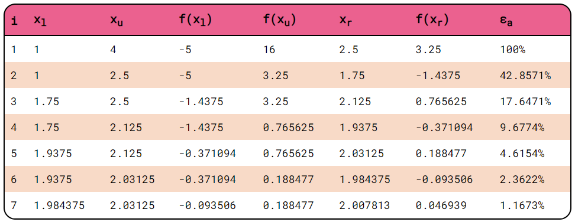
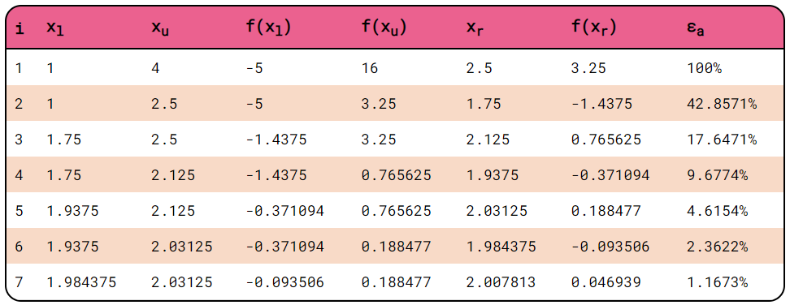

Background Information
The bisection method is a root-finding method in mathematics that is
commonly used in a continuous function where a positive and a
negative value are known. To find the root, this method will
repeatedly bisect the intervals defined by the values with opposite
signs and then select the subinterval in which the function changes
sign. It is a straightforward yet slow method, thus, commonly used
to obtain rough approximations of a solution which is then used as a
starting point for more rapidly converging methods. Others call this
method the interval halving, binary search, or dichotomy methods.
Algorithm
Step 1: Choose initial xl (lower bound) and xu
(upper bound) guesses, such that xl < xu and
f(xl) * f(xu) < 0.
Step 2: Determine the estimate of the root using the formula: xr
= (xl + xu) / 2
Step 3:
-
If f(xl) * f(xr) < 0, the root lies in the
lower subinterval. Therefore, xu = xr, and
return to step 2.
-
If f(xl) * f(xr) > 0, the root lies in the
upper subinterval. Therefore, xl = xr, and
return to step 2.
-
If f(xl) * f(xr) = 0, the root is
xr. Terminate the computation.
Limitations
Limitations of the method:
- It does not apply to systems of more than one equation
- It requires the knowledge of a bracketing interval
- It requires a continuous function
- Its speed of convergence is slow (linear)
Limitations of the application:
-
Response time for showing the table will take longer, and the
application can crash when too many repetitions are inputted.
-
Browser window must be maximized for best viewing experience.
Sample Problem


 
